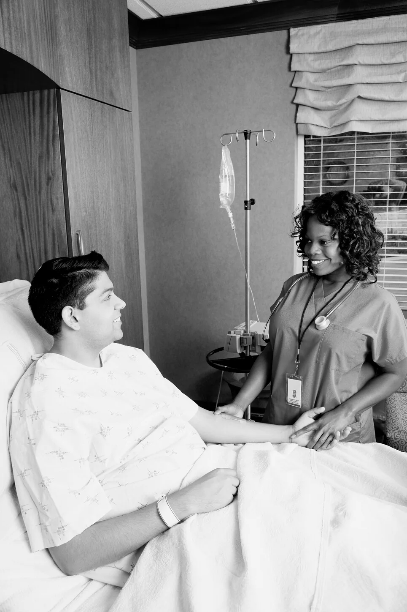

Care should feel coordinated—not like another mission to manage alone.
CareForVets is being designed around clear communication, practical navigation and respect for each veteran's choices, time and independence.
Know what is happening and what comes next.
Healthcare transitions can involve referrals, authorizations, provider availability, new orders and repeated phone calls. Our intended model brings those steps into one understandable path.
- Clear explanation of the referral and next steps.
- Authorization and scheduling status communicated without jargon.
- Coordination with the appropriate provider and referral source.
- Respect for patient choice and the right to ask questions or decline services.

What the CareForVets journey is intended to look like.
Referral
We receive or help clarify the care request and identify what information is still needed.
Authorization
Required approval and coverage details are tracked before care is scheduled.
Care connection
The veteran is connected with the appropriate qualified provider based on the authorized service.
Follow-through
Communication closes the loop so the veteran, family and referral source understand status and next steps.
Have a question about CareForVets?
We can discuss the developing model and how veterans and families may eventually interact with it. Please do not send protected health information through the website.